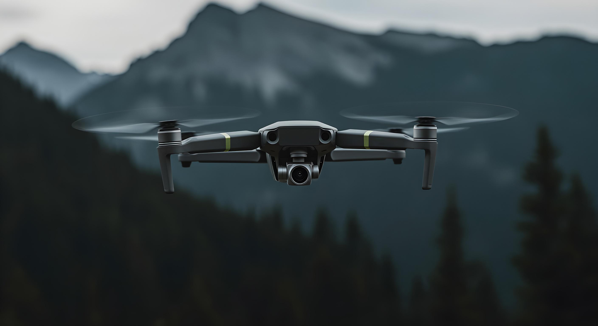
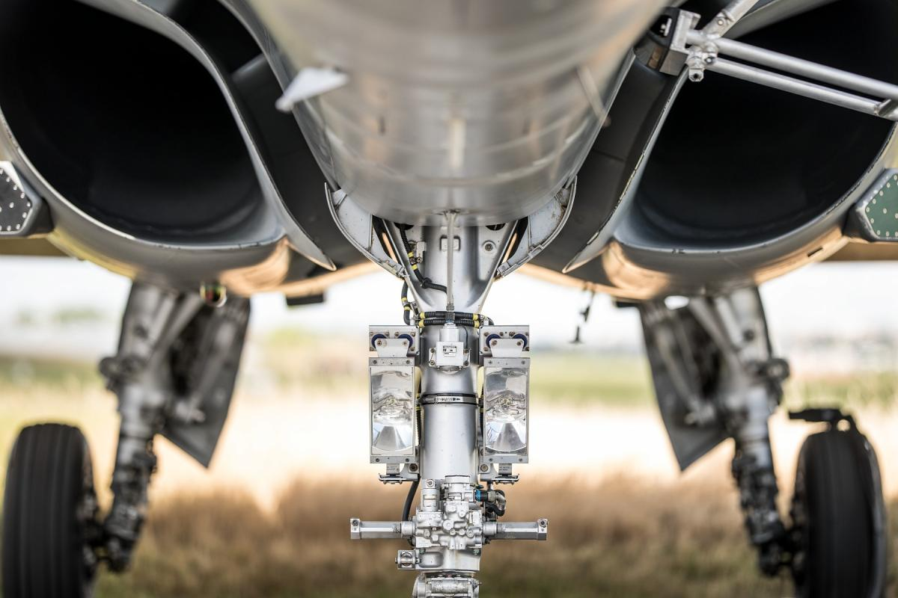
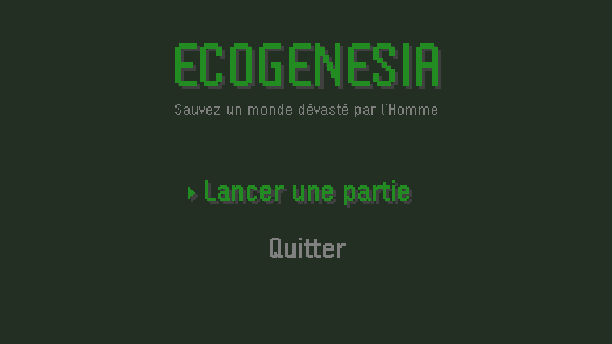
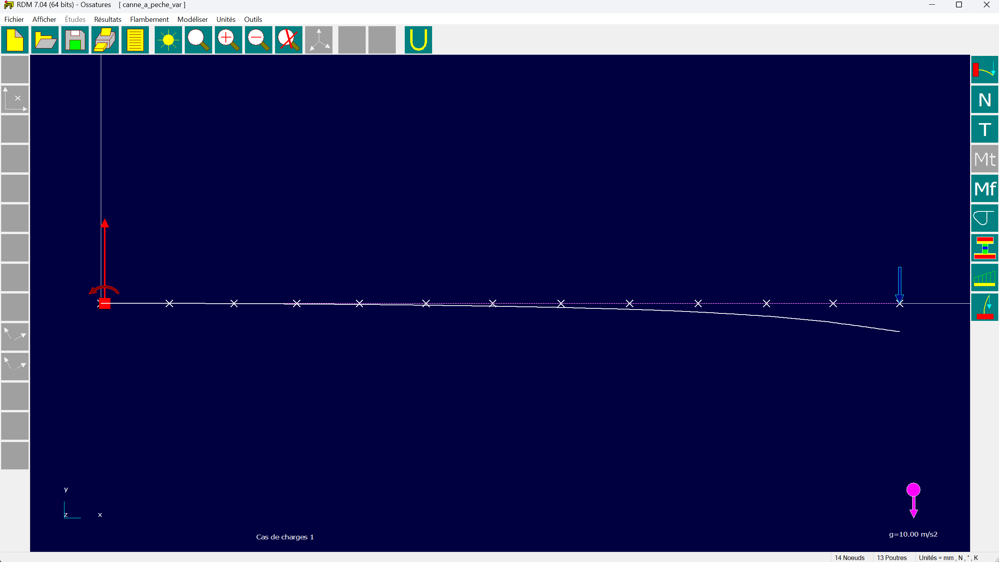
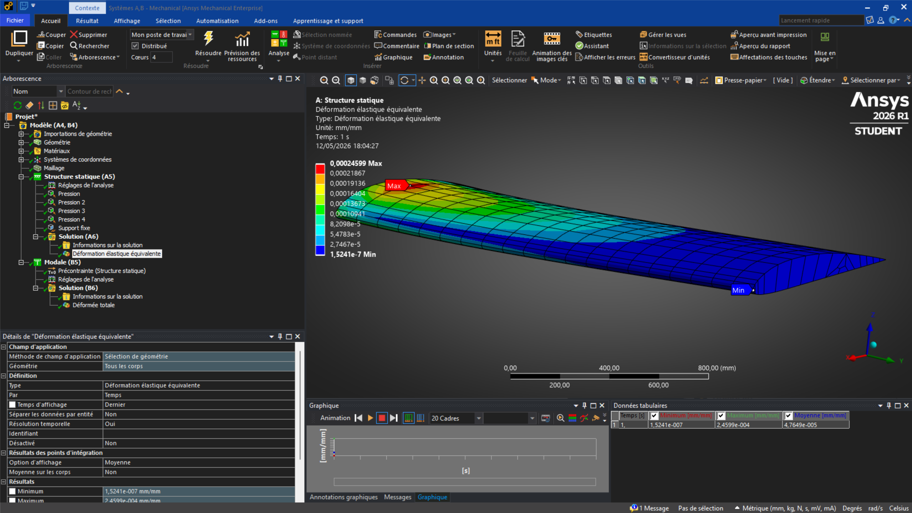
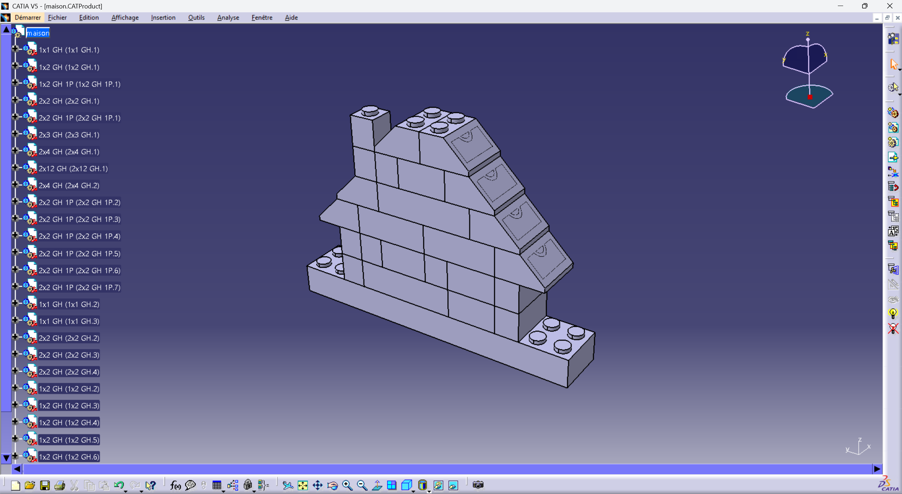
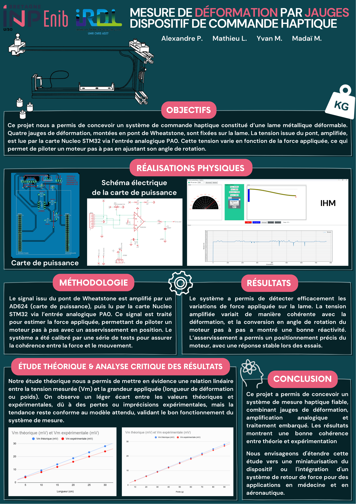
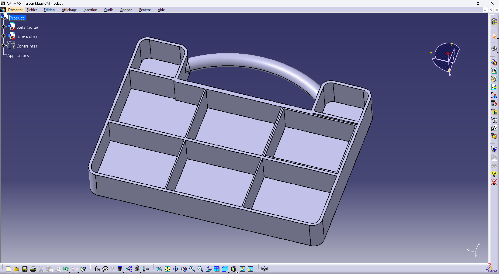
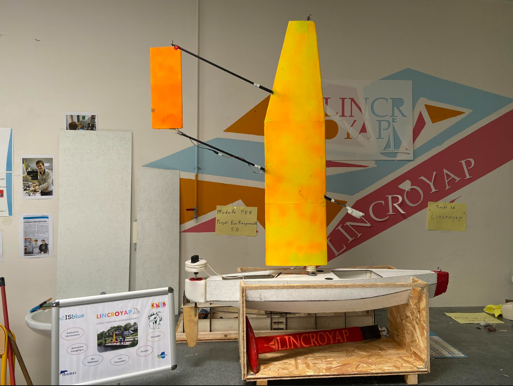
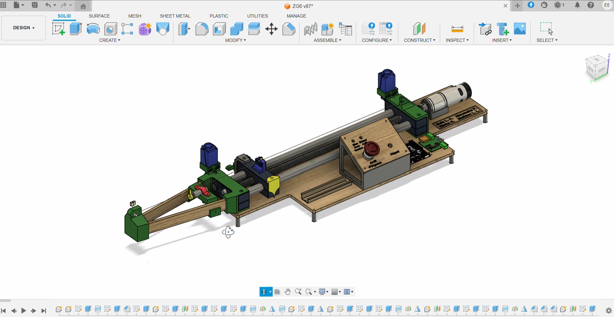

Étude et implémentation d’une commande robuste par modes glissants appliquée à un drone quadrirotor.

Étude mécanique du système d’amortissement d’un train d’atterrissage de Rafale Marine avec corrélation expérimentation / simulation afin d’ajuster la raideur du ressort selon le cahier des charges d’absorption d’énergie et de tenue mécanique.

Ecogenesia est un projet étudiant développé à l’ENIB
dans le cadre d’un projet de conduite de projet objet.
Développé en Java, le jeu plonge le joueur
dans un monde ravagé par la pollution
et les activités humaines,
où la nature est progressivement en train de disparaître.
L’objectif est d’explorer des zones dévastées,
récupérer des déchets,
nettoyer les environnements contaminés
et restaurer progressivement l’équilibre du monde.

Étude mécanique et modélisation par éléments finis
d’une canne à pêche en matériaux composites.
Le projet portait sur l’analyse du comportement
structurel de la canne sous chargement quasi-statique,
avec corrélation entre théorie des poutres,
propriétés matériaux et simulations numériques.
Les travaux ont notamment permis d’étudier
l’influence des empilements de plis carbone / fibre de verre,
la rigidité globale de la structure,
ainsi que la déformation et la flèche
obtenues en fonction du chargement appliqué.

Étude du comportement mécanique et aérodynamique d’un profil d’aile d’avion avec simulations numériques sous ANSYS.

Projet personnel de modélisation et d’assemblage LEGO sous CATIA V5.

Conception d’un dispositif de mesure haptique basé sur une lame déformable instrumentée par jauges de déformation et pilotée par STM32.

Conception modulaire sous CATIA V5 basée sur le paramétrage avancé.

Développement d’un système autonome mêlant électronique embarquée, mécanique et navigation.

Système mécatronique STM32 permettant l’asservissement temps réel d’un instrument automatisé.
